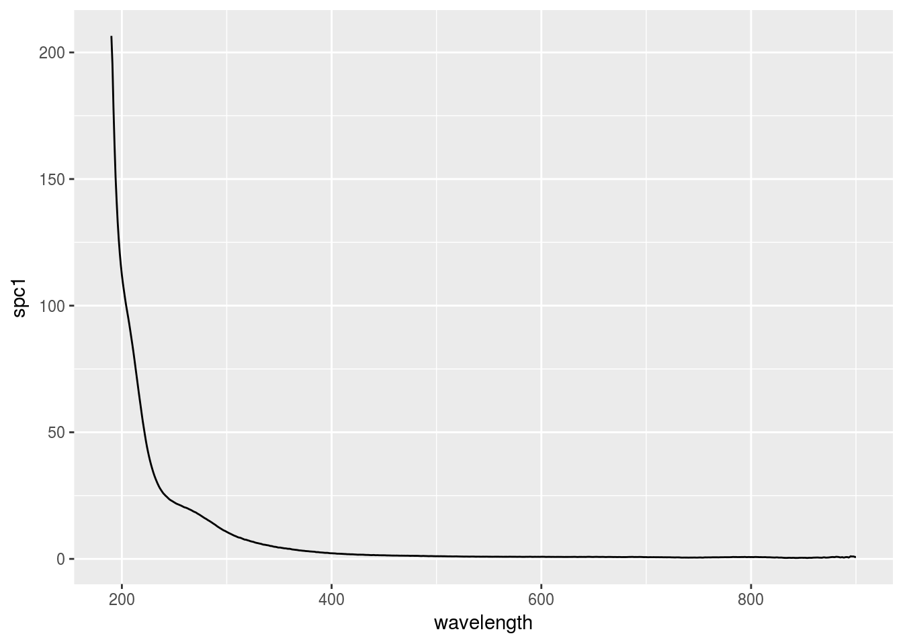

Chapter 2 Absorbance
2.1 Spectral slopes
- Exponential shape.
- Cite the 3 references and why (Stedmon and Markager 2001; Jerlov 1968; Bricaud, Morel, and Prieur 1981).
\[ a(\lambda) = a(\lambda0)e^{-S(\lambda - \lambda0)} + K \]
library(cdom)
data(spectra)
ggplot(spectra, aes(x = wavelength, y = spc1)) +
geom_line()
2.2 Metrics
- \(S_{300-600}\) linked to DOM molecular weight (???).
This is my neat citation.
2.3 References
Fluorescence
Stedmon, C A, and S Markager. 2001. “The optics of chromophoric dissolved organic matter (CDOM) in the Greenland Sea: An algorithm for differentiation between marine and terrestrially derived organic matter.” Limnology and Oceanography 46 (8): 2087–93. doi:10.4319/lo.2001.46.8.2087.
Jerlov, N.G. 1968. Optical oceanography. New York: Elsevier Publishing Company.
Bricaud, Annick, André Morel, and Louis Prieur. 1981. “Absorption by dissolved organic matter of the sea (yellow substance) in the UV and visible domains.” Limnology and Oceanography 26 (1): 43–53. doi:10.4319/lo.1981.26.1.0043.